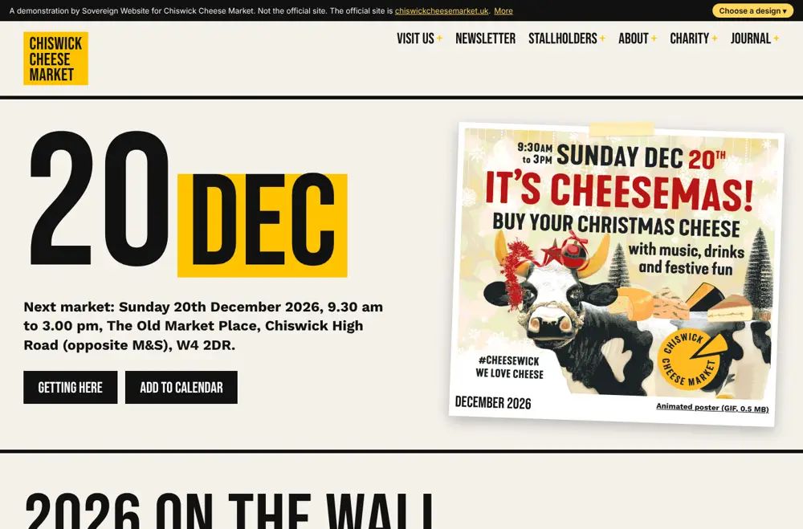
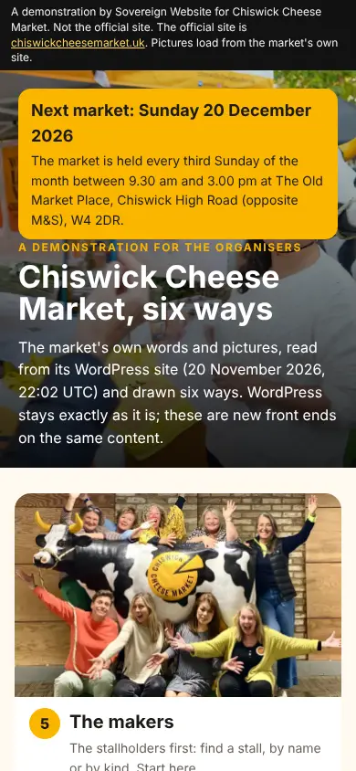
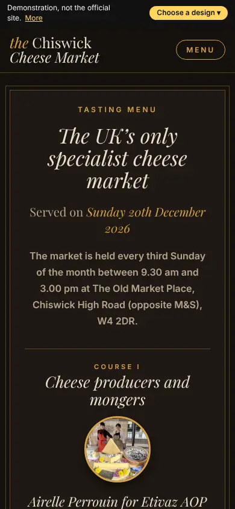

Synthetic users: Chiswick Cheese Market demonstration, pass 3
Site: 74ec98c (v0.1.7), with pass 2 built. Run: 20 November 2026, about 23:05 UTC, by design.b.rounds. Look score: 3.0 (3, 3, 2, 3, 4). Best design votes: 3, 5, 2, 3, 3, so the Poster Wall wins. Weakest: the Cave, for all five personas. The review.
Method: Synthetic users. One agent played all five personas in turn, as in passes 1 and 2. These are simulations, and never replace the measured checks or a real person.
The verdicts in a line each
- Phone visitor, 3: the date is the first thing on the door. Best: 3 ("'20 DEC' with 'ADD TO CALENDAR' works in two seconds"). The door's yellow box sits on top of the line beneath it.
- Regular shopper, 3: best is 5, because "the search is genuinely useful". Still nothing says who is coming on the 20th.
- Low-vision reader, 2: the Cave's beige and grey text on dark brown, its italic struck-through past dates, and design 1's moving banner, which cannot be stopped. Best: 2.
- Design critic, 3: "They are genuinely different ideas, not skins of one layout." Design 3 is "the strongest idea" and "nearly gets a wow" on desktop. Design 4 is "a real concept, but thin, with one item per course".
- Market organiser, 4: "a 'wow' for design 3 on desktop", because "it looks like us". The Cave "does not feel like our community". The organiser wanted to know who would update the site and what it would cost.
Agreed by three or more
- The Cave is the weakest (all five).
- The Poster Wall has the clearest message and the strongest identity (three).
- Nothing says who comes to a given market (three); the data does not hold it.
- The door has a visible flaw and a confusing card order, 5, 1, 2, 3, 4, 6 (three).



Pictures in these screenshots are the market's own, from chiswickcheesemarket.uk, as shown on the demonstration.